ARRAYS In C Programming
Arrays
An array is a collection of data that holds fixed number of values of same type. For example: if you want to store marks of 100 students, you can create an array for it.
Representation of an array
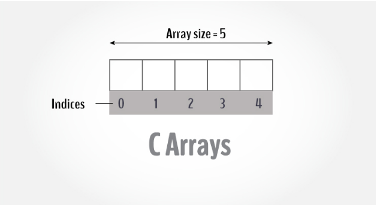 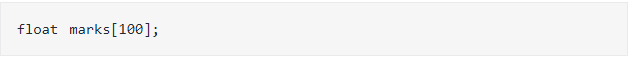The size and type of arrays cannot be changed after its declaration.
Arrays are of two types:
1.One-dimensional arrays
2.Multidimensional arrays
How to declare arrays in c
Example
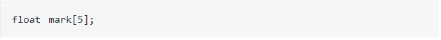Elements of an Array and How to access them?
You can access elements of an array by indices.
Suppose you declared an array mark as above. The first element is mark[0], second element is mark[1] and so on. 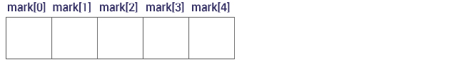
Few key notes:
Arrays have 0 as the first index not 1. In this example, mark[0]
If the size of an array is n, to access the last element, (n-1) index is used. In this example, mark[4]
Suppose the starting address of mark[0] is 2120d. Then, the next address, a[1], will be 2124d, address of a[2] will be 2128d and so on. It's because the size of a float is 4 bytes.
How to initialize an array in C programming?
It's possible to initialize an array during declaration. For example,
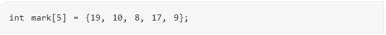Another method to initialize array during declaration:
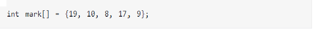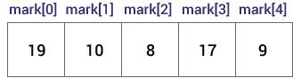
Here,
How to insert and print array elements?
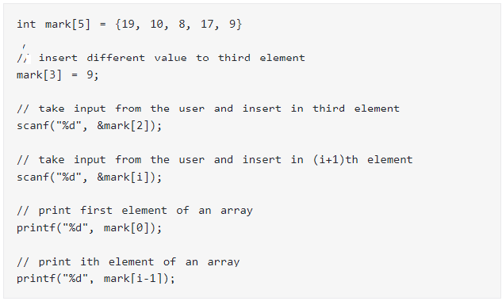Example Array
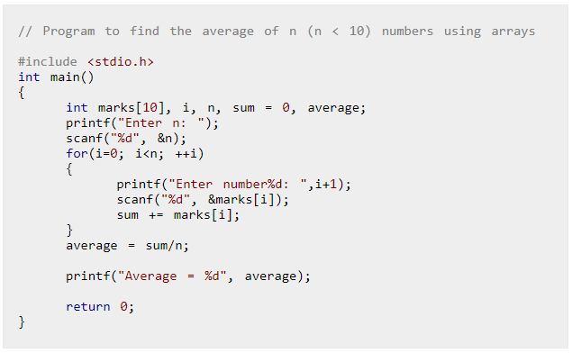Output
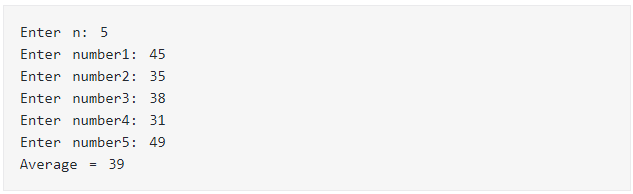One dimensional Array in C
The variable allows us to store a single value at a time, what if we want to store roll no. of 100 students ? For this task, we have to declare 100 variables, then assign values to each of them. What if there are 10000 students or more ? As you can see declaring that many variables for one entity (i.e students) is not a good idea. In a situation like this arrays provide a better way to store data.
Syntax:
datatype array_name[size];datatype:
It denotes the type of the elements in the array.array_name:
it is the name given to an array. It must be any valid identifier.
size:
It is the number of elements an array can hold.here are some example of array declarations:
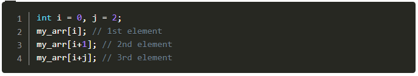num is an array of type int, which can only store 100 elements of type int. temp is an array of type float, which can only store 20 elements of type float. ch is an array of type char, which can only store 50 elements of type char.
Note:
When an array is declared it contains garbage values.Processing 1-D arrays
The following program uses for loop to take input and print elements of a 1-D array.
#include<stdio.h>
int main()
{
int arr[5], i;
for(i = 0; i < 5; i++)
{
printf("Enter a[%d]: ", i);
scanf("%d", &arr[i]);
}
printf("\nPrinting elements of the array: \n\n");
for(i = 0; i < 5; i++)
{
printf("%d ", arr[i]);
}
// signal to operating system program ran fine
return 0;
}Expected Output:
Enter a[0]: 11
Enter a[1]: 22
Enter a[2]: 34
Enter a[3]: 4
Enter a[4]: 34
Printing elements of the array:
11 22 34 4 34**How it works ? **
In Line 5, we have declared an array of 5 integers and variable i of type int. Then a for loop is used to enter five elements into an array. In scanf() we have used & operator (& is also known as the address of operator) on element arr[i] of an array, just like we had done with variables of type int, float, char etc. Line 13 prints "Printing elements of the array" to the console. The second for loop prints all the elements of an array one by one.
Two Dimensional Array in C
The syntax declaration of 2-D array is not much different from 1-D array. In 2-D array, to declare and access elements of a 2-D array we use 2 subscripts instead of 1.
Syntax:
datatype array_name[ROW][COL];The individual elements of the above array can be accessed by using two subscript instead of one. The first subscript denotes row number and second denotes column number. As we can see in the above image both rows and columns are indexed from 0. So the first element of this array is at arr[0][0] and the last element is at arr[1][2]. Here are how you can access all the other elements:
arr[0][0] - refers to the first element arr[0][1] - refers to the second element arr[0][2] - refers to the third element arr[1][0] - refers to the fourth element arr[1][1] - refers to the fifth element arr[1][2] - refers to the sixth element
If you try to access an element beyond valid ROW and COL , C compiler will not display any kind of error message, instead, a garbage value will be printed. It is the responsibility of the programmer to handle the bounds.
arr[1][3] - a garbage value will be printed, because the last valid index of COL is 2 arr[2][3] - a garbage value will be printed, because the last valid index of ROW and COL is 1 and 2 respectively
Just like 1-D arrays, we can only also use constants and symbolic constants to specify the size of a 2-D array.
Processing elements of a 2-D array #
To process elements of a 2-D array, we use two nested loop. The outer for loop to loop through all the rows and inner for loop to loop through all the columns. The following program will clear everything.
#include<stdio.h>
#define ROW 3
#define COL 4
int main()
{
int arr[ROW][COL], i, j;
for(i = 0; i < ROW; i++)
{
for(j = 0; j < COL; j++)
{
printf("Enter arr[%d][%d]: ", i, j);
scanf("%d", &arr[i][j]);
}
}
printf("\nEntered 2-D array is: \n\n");
for(i = 0; i < ROW; i++)
{
for(j = 0; j < COL; j++)
{
printf("%3d ", arr[i][j] );
}
printf("\n");
}
// signal to operating system everything works fine
return 0;
}
Expected Output:
Enter arr[0][0]: 11
Enter arr[0][1]: 35
Enter arr[0][2]: 73
Enter arr[0][3]: 831
Enter arr[1][0]: 3
Enter arr[1][1]: 40
Enter arr[1][2]: 31
Enter arr[1][3]: 93
Enter arr[2][0]: 35
Enter arr[2][1]: 10
Enter arr[2][2]: 52
Enter arr[2][3]: 81
Entered 2-D array is:
11 35 73 831
3 40 31 93
35 10 52 81
how it works?
There is nothing new in this previous program that deserves any explanation. We are just using two nested for loops. The first nested for loop takes input from the user. And the second for loop prints the elements of a 2-D array like a matrix.